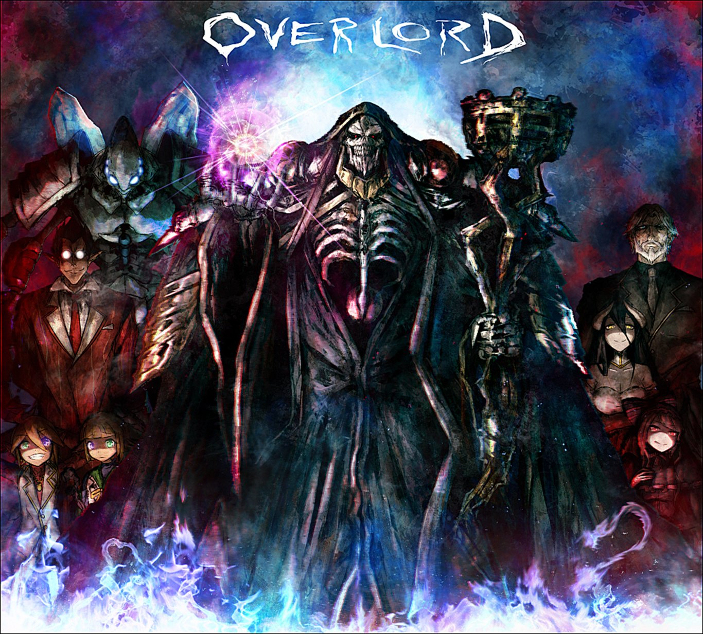
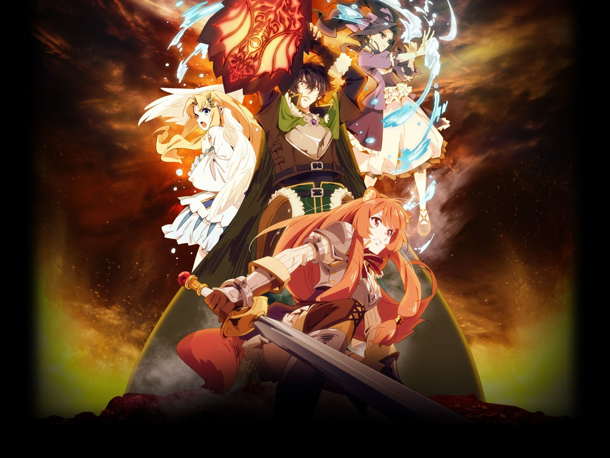
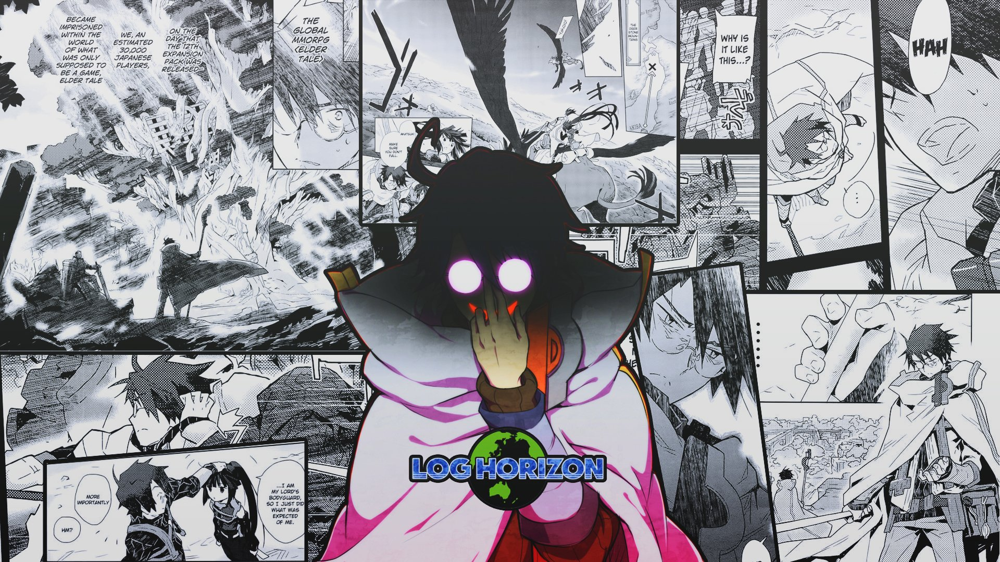
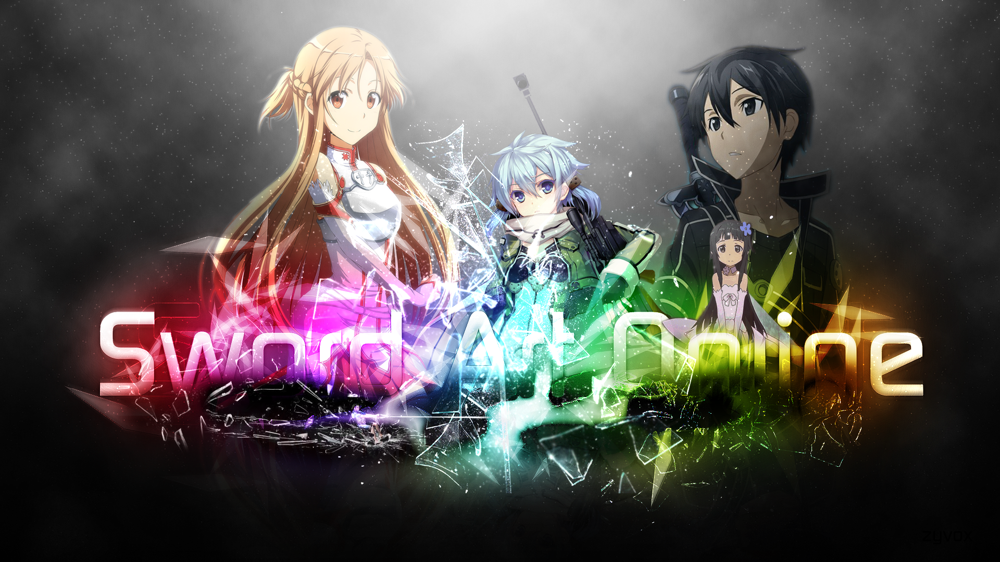

EXEMPLES D'ANIMES ISEKAI
OVERLORD
L'histoire débute dans Yggdrasil, un jeu de rôle virtuel en ligne ayant connu un véritable succès, mais sur le point de se fermer définitivement après 12 ans d'existence.Momonga décide de rester immergé dans le jeu jusqu'à la déconnexion forcée. À sa grande stupeur, à l'heure annoncée de l'arrêt des serveurs, au lieu de revenir dans le monde réel, il est envoyé dans un nouveau monde. Il s'aperçoit très vite que les PNJ semblent acquérir leur propre volonté et surtout qu'ils sont devenus réellement vivants, dotés d'odeurs corporelles ou d'un pouls et surtout de sentiments. Il tente de découvrir ce monde et s'efforcera de se faire connaître sous le nom de sa célèbre guilde : Ainz Ooal Gown.
THE RISING HERO
Naofumi se voit un jour invoqué dans un monde fantastique avec trois autres personnes afin de devenir les héros de ce monde. Dès leur arrivée, chacun se retrouve équipé d'une des quatre armes légendaires où Naofumi hérite d'un simple bouclier considéré comme le plus inutile des quatre équipements. En raison de son manque de charisme, Naofumi finit malheureusement avec une seule coéquipière tandis que les autres en avaient plusieurs. Et comme si cela ne suffisait pas, lors du deuxième jour, il a été trahi, accusé à tort et volé par ladite partenaire.Méprisé de tous, du roi aux paysans,le jeune homme ne pense désormais plus qu'à se venger!
LOG HORIZON
À la sortie de son douzième pack d'extension, le jeu de rôle en ligne massivement multijoueur, Elder Tale, est sans conteste devenu le MMORPG le plus joué dans le monde avec une base d'utilisateurs de plusieurs millions de joueurs. Cependant, à la suite de la sortie de sa douzième extension, Novasphere Pioneers, 30 000 joueurs japonais et plusieurs milliers d'autres à travers le monde connectés au moment de la mise à jour se retrouvent piégés dans le jeu sans possibilité de se déconnecter. Parmi ces joueurs, Shiroe, un jeune adulte peu sociable et ses amis Naotsugu et Akatsuki. Dans le but de surmonter les obstacles et les dangers de ce monde maintenant devenu leur réalité, ils décident alors de faire équipe.
SWORD ART ONLINE
Sword Art Online est un jeu de rôle en ligne massivement multijoueur en réalité virtuelle (VRMMORPG), sorti en 2022. Avec le NerveGear, un casque de réalité virtuelle stimulant les cinq sens de l'utilisateur, les joueurs peuvent contrôler leur personnage dans le jeu avec leur esprit. Le jeu est bêta-testé par 1 000 joueurs puis est enfin commercialisé. Le 6 novembre 2022, plus de 10 000 joueurs se connectent au jeu pour la première fois et découvrent plus tard qu'ils sont incapables de se déconnecter. Ils sont ensuite informés par Akihiko Kayaba, le créateur de SAO, qu'ils doivent atteindre le 100e palier de la tour du jeu et vaincre le boss final pour être libres. Cependant, si leurs avatars meurent dans le jeu, leurs corps mourront aussi dans le monde réel.
NO GAME NO LIFE

Sora et Shiro sont frère et sœur inséparables, autant dans la réalité que dans les jeux vidéo (ils ne sont en réalité pas frère et sœur mais se considèrent comme tel). En équipe, leurs compétences individuelles les rendent invincibles : Sora (空, ciel, espace, vide) a une intuition astucieuse, une grande culture, une très grande intelligence et une perspicacité sans faille, tandis que Shiro (白, blanc) possède une intelligence dépassant le génie. Dans le vrai monde, ils sont reclus, asociaux et hikikomoris. Dans le monde du jeu vidéo, ils jouent ensemble en tant que 『 』(blanc), un groupe mystérieux de joueurs en ligne ne connaissant pas la défaite, finissant premier à tous les jeux auxquels ils participent. Du fait que les noms des comptes des personnages soient toujours un espace vide, ils sont connus sous le nom de « Blanc » (空白, kūhaku, litt. Espace blanc).